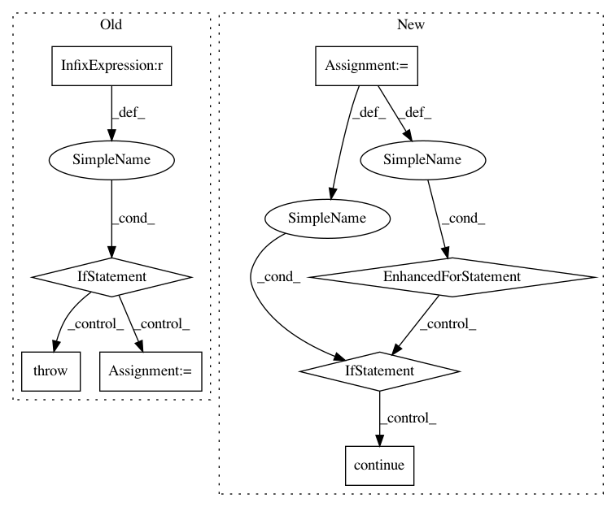

1a73a1367fedfa8368b6c42103e60e1b370bc14a,catalyst/contrib/criterion/focal_loss.py,FocalLoss,forward,#FocalLoss#Any#Any#,11
Before Change
// TODO refactor
def forward(self, outputs, targets):
if targets.size() != outputs.size():
raise ValueError(
f"Targets and inputs must be same size. "
f"Got ({targets.size()}) and ({outputs.size()})"
)
max_val = (-outputs).clamp(min=0)
log_ = ((-max_val).exp() + (-outputs - max_val).exp()).log()
loss = outputs - outputs * targets + max_val + log_
invprobs = F.logsigmoid(-outputs * (targets * 2.0 - 1.0))
loss = (invprobs * self.gamma).exp() * loss
After Change
:param targets: [bs; num_classes]
:return:
num_classes = logits.size(1)
loss = 0
targets = targets.view(-1)
logits = logits.view(-1, num_classes)
for cls in range(num_classes):
// Filter anchors with -1 label from loss computation
if cls == self.ignore:
continue
cls_label_target = targets[..., cls].long()
cls_label_input = logits[..., cls]
loss += sigmoid_focal_loss(
cls_label_input,
cls_label_target,
gamma=self.gamma,
alpha=self.alpha
)
return loss
__all__ = ["FocalLossBinary", "FocalLossMultiClass", "FocalLossMultiLabel"]
In pattern: SUPERPATTERN
Frequency: 3
Non-data size: 8
Instances
Project Name: Scitator/catalyst
Commit Name: 1a73a1367fedfa8368b6c42103e60e1b370bc14a
Time: 2019-04-19
Author: scitator@gmail.com
File Name: catalyst/contrib/criterion/focal_loss.py
Class Name: FocalLoss
Method Name: forward
Project Name: brian-team/brian2
Commit Name: 19b4b0bea9c63cadf71f387ea410f3548bff8e97
Time: 2012-09-06
Author: marcel.stimberg@ens.fr
File Name: brian2/equations/equations.py
Class Name: Equations
Method Name: check_units
Project Name: pyannote/pyannote-audio
Commit Name: dc357b0e9d2bc40633f738997e8b7d17221c28fd
Time: 2018-06-29
Author: bredin@limsi.fr
File Name: pyannote/audio/util.py
Class Name:
Method Name: from_numpy